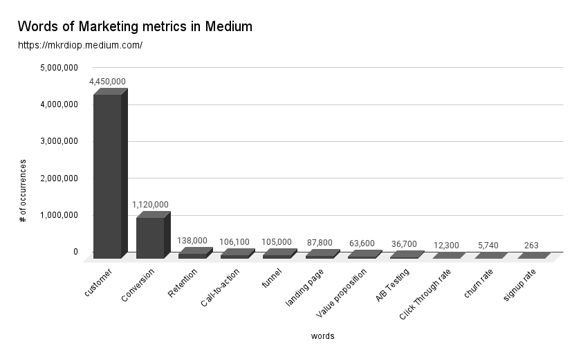
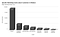
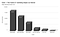
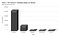
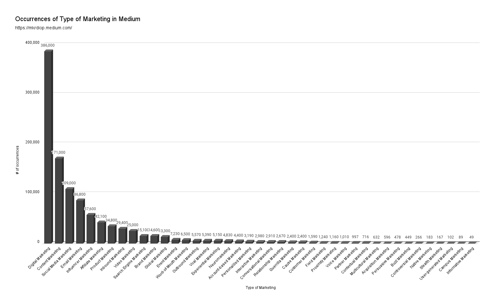
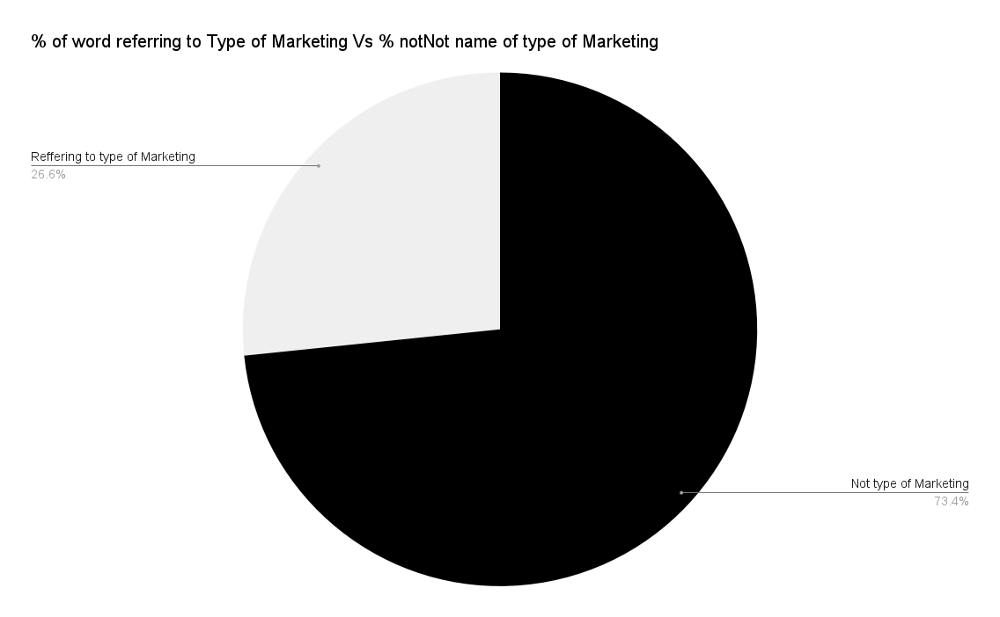

Metrics of Words of Marketing in Medium
When the Marketing funnel shapes our writings

Every field from technology to Marketing has its own domain-specific vocabulary which is a set of defined words and acronyms used by the professionals of this field. Marketing as a field itself doesn't escape from this fact because we have many technical words used by marketers to define and name some marketing events and concepts. In this article, we are going to take these words of the world of marketing and quantify their usages online in terms of the number of their occurrences, not in the whole wide web but in articles published on Medium which is a big publication platform certainly filled with professional marketers mainly content marketers.
Customer is king is a sentence we used to use to communicate the importance of caring about them. The first cause of failure for a company or a startup is to not have a product-market fit, just another marketing word to the lack of customers willing to buy a product and with enough budget and decision power to do so. Then the first goal of a company or a startup is to get enough customer what’s make it obvious for everyone involved in a business to be interested about customers and that’s the first thing that this chart below highlights to us. The Marketing word Customer is the most used word in Medium with more than 4 million occurrences.

If we look at more specific marketing words about Customers like referral, customer acquisition and so on we get the chart below with the number of occurrences of each of these marketing words.

As you can see here the most used marketing word is referral which is related to getting customers to bring other customers. Said using a more overused marketing word, viral marketing is something that interest most medium writers about marketing and broadly about business. But what’s interesting to notice is that the marking funnel is visible with this chart the number of occurrences of a marketing words is like correlated with the step of the marketing funnel that this word is about. You can better visualize this fact with these two charts below


With the chart 1 the relation between the marketing funnel and the the number of occurrences of the marketing word charted is clear because the word landing page is related to operations that are at the top of the marketing funnel and a landing page is here to show a value proposition to visitors who are potential customer what’s make evident the fact that the word conversion comes just after these two words. This is why I have said that the marketing funnel is shaping our interest in the marketing topics we write about but I was not willing to just stop my analysis here because I want to show you more metrics about the words of marketing in medium then let’s see how each marketing types is covered in Medium given their respective number of occurrences. I have chosen 41 types of marketing form digital marketing to informative marketing and for each of them I plotted the number of their occurrences in Medium’s articles and below is the chart I produced.

with the chart above we clearly have a long tail shape which is a common shape in internet things from business models to other fields like this analysis about words of marketing in a publishing platform. I you want to know more about the longtail, I highly recommend you to read the Book of Chris Anderson, the long tail which goes into the detail of how this effect plays and shapes many internet driven things.
The occurences of names of types of marketing make 26.6% of the number of occurrences of the word marketing which have approximately almost 4 millions occurrences (see chart).

I don’t know if these metrics is useful for you but for me they really are because they helps knows what matter and where there is gap about a topic to fill by writing about it because there are less occurrences like how we used to do SEO then if you need to have such kind of data and even more granular metrics about the topics you want you can use this form to let me know.
Here is another article about such kind of metrics but with this article I used the profile of Bart Roossien and compared it with a typical average medium writer. I can do the same for you what I need is to know your medium profile that you can provide me using this form.
Thank you for reading hope this article will help you level up your writings by showing you what is most important for you to write about.